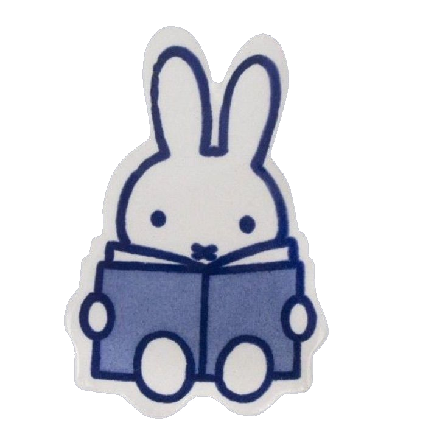
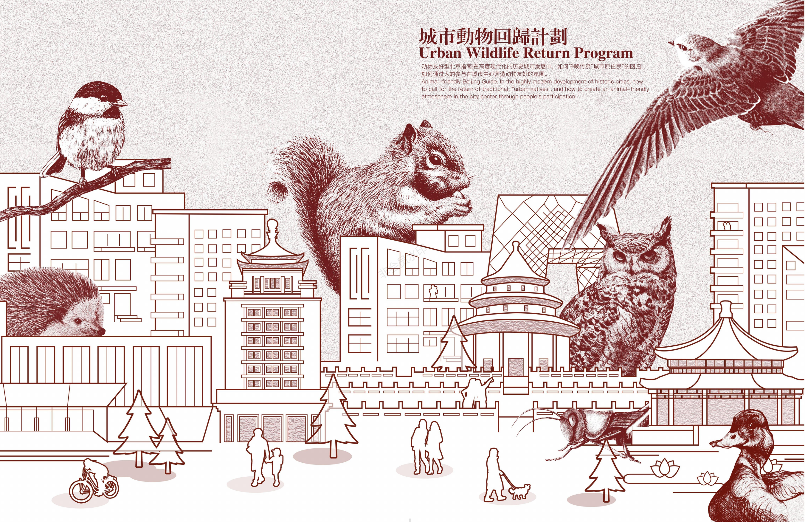
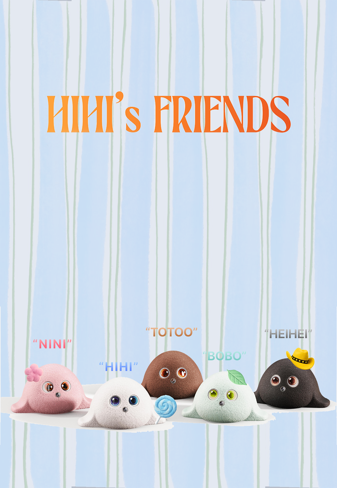
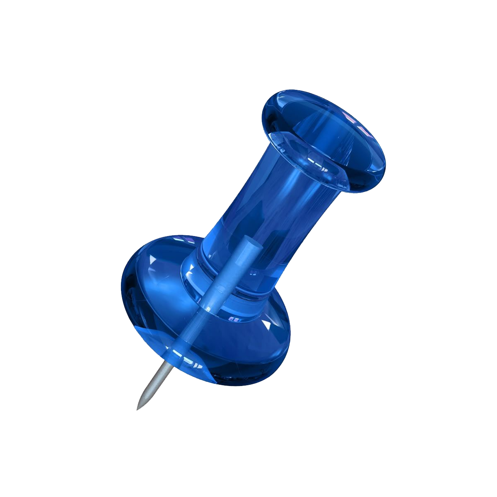
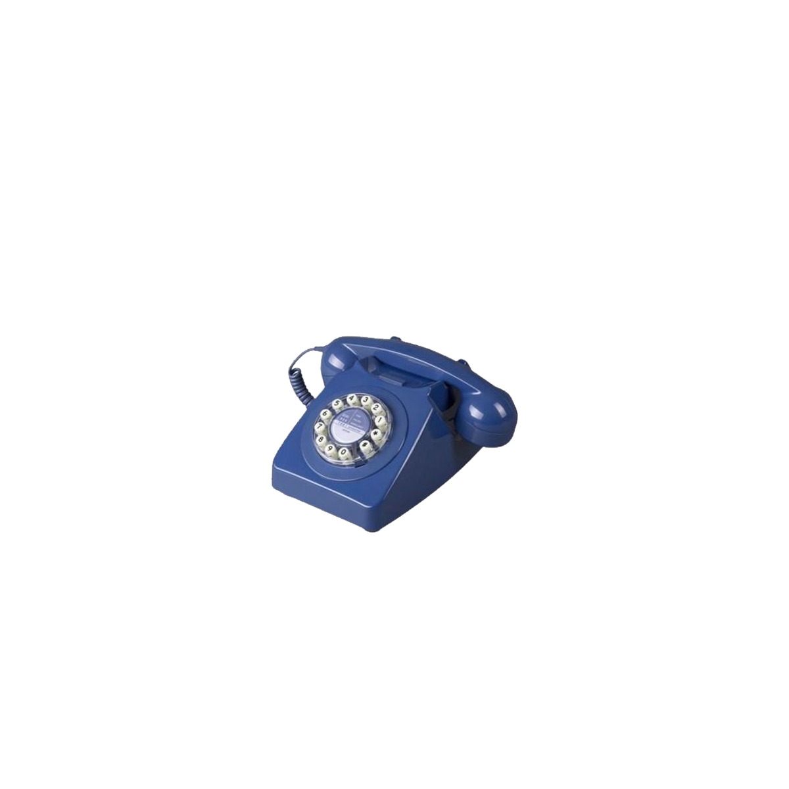

Hi,
I’m Hui Yao
> Creative AI Product Builder
My internship experience has centered on agent interaction strategies, model evaluation, and data analysis.
AT POIZON
I worked on the scenario strategy and conversational experience of an AI shopping assistant. By introducing scenario-based multi-turn guidance and more human-centered conversation strategies, I helped improve AI adoption and product exposure.
At Zhihuishu, I contributed to an AI knowledge-base product by building workflows for knowledge production and quality evaluation.
My interdisciplinary background in design and data analysis helps me understand how users interact with AI while validating product strategies through experiments and data.
Experience
# Education
Technical University of MunichInformatics, Exchange student
Shanghai Jiao Tong UniversityLCC, Master of Resources and Environment
Beijing Jiaotong UniversitySAAD, Bachelor of Environmental Design
MIT Online courseArtificial Intelligence: Scientific Data Analysis and Machine Learning Applications
# Internship Experience
POIZON | AI Product Manager Intern | Shanghai
Contributed to the scenario strategy and conversational experience of an AI shopping assistant. Designed scenario-based multi-turn guidance and more natural conversational patterns to improve user adoption of AI recommendations and product exposure.
Zhihuishu.com | AI Product Manager Intern | Shanghai
Contributed to the development of an AI-powered knowledge base. Established scalable knowledge-production workflows and a quality evaluation framework to improve content consistency and quality control.
# Project Experience
Improving Low-Resource Language Learning through Imbalanced Multilingual TrainingCore member
Food Sustainability Track TOP1 | AI-Driven Emotional Eating Companion SystemCore member
2025 SJTU Global Challenge Program | Southeast Asia waste plastic ProjectTeam Leader
National Innovation Training Project | Urban Wildlife Return PlanProject Leader
BJTU Art and Culture Center | Visual Arts DepartmentDeputy Head
BJTU SAAD Debate TeamCoach
# Entrepreneurial Experience
ZHU STUDIOFounder & Product Lead
Built an education services brand from the ground up for students pursuing recommendation-based graduate admission in China. Designed segmented offerings, tiered pricing, and delivery SOPs, transforming individual expertise into scalable courses and mentoring services. Achieved organic customer acquisition and paid conversion through WeChat, Xiaohongshu, and private communities, growing 1.6K+ followers, generating 50K+ likes and saves, and reaching RMB 300K+ in revenue.
# Honors Received
Gold Prize, Ecological Health and Sustainability Track, 12th Asian Design Award for Students
First Prize, 13th National Green Building Design Competition
National Second Prize, 7th Milan Design Week National College Outstanding Works Exhibition
Outstanding Work Award, 12th Annual Exhibition of Chinese College Artworks
Excellence Award, 12th National Green Building Design Competition
2023 National College Student Innovation Training Project Lead (Selection Rate: 4.54%)
Langji Global Talent Scholarship (2025)
Academic Excellence Scholarship (2021)
First Prize, Asia-Pacific Region, Global Sustainable Development Challenge
Track TOP1, FourC Challenge 24h Design Challenge
Team Leader, SJTU Global Challenge Program
Bronze Award, 4th Hong Kong Contemporary Design Awards
Outstanding Communist Youth League Member, University Level (2022, 2023)
Third Prize, University-level Innovation and Entrepreneurship Training Program (2022)
Third Prize, University-level Energy Conservation and Emission Reduction Competition (2023)


01. Urban Wildlife Return PlanNational Innovation Training Project
02. AI-Driven Emotional Eating Companion SystemFood Sustainability Track TOP1 03. Emotional JournalMeituan AI Coding Project plasticwastedata.org 04.
Southeast Asia Plastic Waste ExplorerIndependent Research Project
04.
Southeast Asia Plastic Waste ExplorerIndependent Research Project
01 / 04National Innovation Training Project
Urban Wildlife Return Plan
Project Leader02 / 04Food Sustainability Track TOP1
AI-Driven Emotional Eating Companion System
Core memberIndependently built the product demo03 / 04Meituan AI Coding Project
Emotional Journal
Product design · Development · Deployment04 / 04Independent Research Project
Southeast Asia Plastic Waste Explorer
Research · Data modelling · VisualizationNational Innovation Training Project
Urban Wildlife Return Plan
Project Leader
ORIGINAL UI · CLICK TO FOLLOW THE UX PATH
01 / 10Beijing opening
Food Sustainability Track TOP1
AI-Driven Emotional Eating Companion System
Core memberIndependently built the product demo
FULL HIHI SOURCE UI · INTERACTIVE UX
美团 AI CODING 笔试命题
美团笔试命题【情绪日记】
独立完成产品设计、开发与部署从觉察情绪，到完成一个关怀自己的行动
一款移动端优先的情绪日记产品，帮助用户记录情绪强度、触发因素与身体信号。HiHi 会梳理事件—想法—感受链路，并推荐呼吸、音乐或轻运动等低压力调节方式，同时保持明确的隐私与非诊断边界。
- 01
情绪记录与触发因素分析
- 02
个性化自我关怀方案推荐
- 03
日记时间线与七日情绪趋势
线上产品 DEMO · 可交互体验
Independent Research Project
Southeast Asia Plastic Waste Explorer
Research · Data modelling · VisualizationFollowing plastic waste across Southeast Asia.
An evidence-led explorer tracing plastic-waste flows across ASEAN-10. It connects 2014–2024 bilateral trade data with 2022 source attribution and CSP-MFA v12.1, linking routes, polymer composition, material pathways, and impacts while keeping observed, estimated, and modelled evidence distinct.
- 01
2014–2024 bilateral trade routes
- 02
2022 source & composition attribution
- 03
CSP-MFA v12.1 flows & impacts
WEBSITE HOMEPAGE · CLICK TO OPEN
EXPLORE THE DATA↗
EXPLORE THE DATA↗
05 PHOTOGRAPHY
Fragments in Transit
A photographic notebook of places, weather, architecture, and moments in between.
ITALY
“Thence we came forth to rebehold the stars.”
0120
Preparing the photographs…
LET’S CONNECT
I’m always open to conversations about AI products, research
collaborations, and new opportunities.

Get in Touch
- Phone
- +86 187 0169 9121
- +86 133 7325 2269 ↗
- Location
- Shanghai

Find Me Online
- Xiaohongshu
- 675 ↗
- 675hyyy
- Hui Yao ↗
- GitHub
- HuiYaoooo ↗
Let’s build thoughtful AI products together！